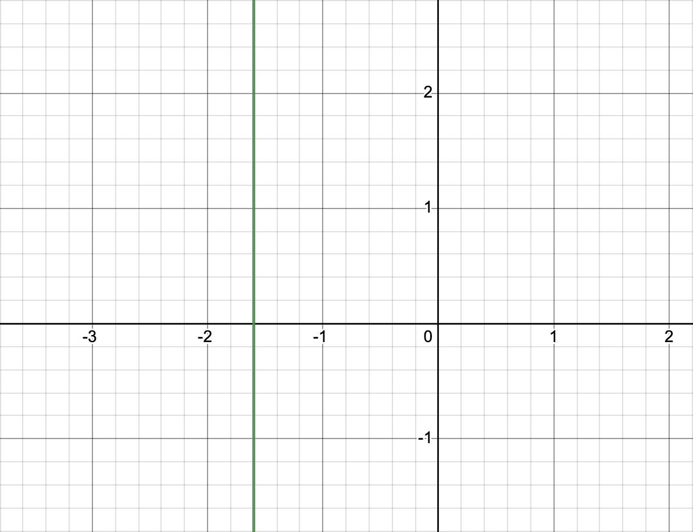
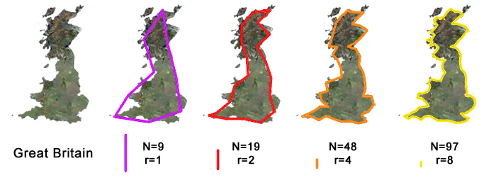

How to divide by zero, and other things you will learn in highschool calculus. This will give you a brief overview of calculus. This will not replace your calculus textbook. This will help you understand what you are learning in class, and why. When I first learned calculus we focused on the mechanics of solving problems. I wish we’d spent more time discussing why we were learning these things and what they meant.
You need to remember some algebra to understand this document. Here is a quick refresher of the relevant facts. You will need a lot more algebra when you are ready to actually solve calculus problems.
You should be familiar with graphs of functions. Graphs are the easiest way to explain and understand calculus.

2 - x2 Click on any graph
for an interactive version.
The dark horizontal line is called “the x axis.” The numbers along this line are the inputs to the function. These are often things that you can change.
The dark vertical line is called “the y axis.” the numbers along
this line are the outputs from the function. If you give your computer or
calculator an input to a function, it can compute the output of that
function. Sometimes we say f(x) instead of “y.”
Slope is defined as “rise over run.”
f(x) = 2x ÷ 3
In graph above you can see that the function moves
2 units up every time it moves
3 units to the right. So the slope is 2 ÷ 3, or ⅔.
f(x) = 2x ÷ 3
You could also say that the function moves
4 units up every time it moves
6 units to the right. And it moves
6 units up each time it moves
9 units to the right.
2 ÷ 3, 4 ÷ 6, and 6 ÷ 9 all give
you the same answer, ⅔.
In the next graph notice that
g(x) = 2x ÷ 3 + 1
has different values than
f(x) = 2x ÷ 3,
but they both have the same slope.
f(x) = 2x ÷ 3
and
g(x) = 2x ÷ 3 + 1
The next graph shows a line going down, so it has a negative slope. You
can see that the function moves
2 units down
every time it moves
3 units to the right. So the slope is (-2) ÷ 3, or -⅔.
f(x) = -2x ÷ 3A horizontal line has a slope of 0.

f(x) = 1.5
In this case the “rise” will always be 0. The “run” can be any number I
choose, let’s say 42. 0 ÷ 42 = 0 So the slope is 0.
If the line is vertical, its slope is undefined.
x = -1.6In this case the “run” is always 0. And anything ÷ 0 is undefined. (Or is it? Keep reading!)
Limits are a way to divide by zero and otherwise make infinity work for you. In calculus class you will learn a more precise definition of limits, and a lot of rules to help you compute them. You might have to use limits directly to solve some problems. Mostly you learn about limits so you can understand the definitions of derivatives and integrals, described below.
Calculus focuses on smooth functions. There is a formal definition of smoothness, but your intuition is right. Let’s look at some examples.
2 - x2 (2 minus x squared)
is smooth everywhere.
2 - x2
|x| (the absolute value of x) is smooth everywhere except at
x = 0.

|x|
n! (n factorial) is not continuous, so it can’t be smooth.

n!If you zoom into a smooth function enough, it will eventually look like a straight line. That makes the function very easy to predict.
Smoothness is the opposite of a fractal. If a function looks like the Mandelbrot set, you probably can’t apply calculus to that function. No matter how much you zoom into the Mandelbrot set you’ll always find places where it is not smooth.

The same goes for the natural fractals, like the coastline of Britain. No matter how much you zoom in to a natural coastline, you will always find more details. It will never look like a straight line. It will never be smooth.

Let’s look at the function
f(x) = x3 ÷ x. Naively you
might simplify that to x2. That’s almost right, but remember that you are not allowed to divide by
zero. So you should really say
x3 ÷ x = x2, but only when x ≠ 0.
x3 ÷ x is
undefined when x = 0.
x3 ÷ x Notice the open
circle at x=0.
In simpler terms,
x3 ÷ x looks a lot like
x2, but x3 ÷ x has a hole it
it!
x2
If you only had the first graph, you could probably guess what the second graph looked like! You could fill in that hole with anything you want, but only one value would make the function smooth. Congratulations, you just computed a limit! Calculus class will teach you when it is okay to use the complete version of the function, rather than the original version with the hole.
If you see delta and epsilon in a problem, it is probably talking about limits. These are written with lowercase Greek letters: ùõø and ùú∫.

A derivate is a rate of change. For example, lets say
f(x) tells us the total number of cookies in your house at a
given time. Then the derivate of f(x) tells us how quickly
you are eating those cookies or baking new ones.
This graph shows that the number of cookies goes down over time. That
means someone is eating your cookies! The graph would go up if you baked
or bought more cookies. Also notice that f(x) is continuous
and smooth. That means that someone is eating a little bit of a
cookie at a time, continuously. Alternatively, what if whole cookies were
disappearing at once? Then the graph might look like this.
This function is not smooth everywhere. We can only talk about the derivative where it is smooth. Where it is not smooth, we say the derivate is not defined.
Our cookie example is a straight line. The derivative of a line is the slope of the line. In this case someone is eating one cookie per minute. The rate of change is -1 cookies per minute.
The following example is a little more complicated. You could say that the average rate of change for the first 5 minutes is -1, just like the previous graph. That’s correct, but it’s leaving out a lot of details.
Let’s break the graph into pieces. - For the first minute the graph has a slope of 2, so the derivative in that section is 2. - For the next two minutes the slope is -1, and so is the derivative. - Then the graph jumps down by 5. - For the last two minutes the slope is 0, and so is the derivate. Here’s a graph of the derivative. Notice that the derivative is only defined where the original function is (a) defined, (b) continuous, and (c) smooth.
So, what’s the derivative of x2?
You could say that the average rate of change between 0 and 1 is 1. And the average rate of change between 1 and 2 is 3. If you keep going you’ll get a graph like this for the derivative x2.
But there’s no reason to break things up that way. What if you asked for the average every time x changes by ½? Then the answers would look like this graph.
As you look at smaller and smaller sections, you see more an more detail. How small can we make the sections?
As we get closer and closer to 0, the answer gets better and better. What
if we asked about a change of 0? Every time x moves 0 units to the right,
x2 moves 0 units up. And
0 ÷ 0 = what?
And that’s why we learn limits before we learn derivatives. When you work
out the problem in class you’ll eventually learn that the derivative of
x2 is 2x,
matching what we see on the graph. But along the way to
2x you’d see something (roughly) similar to
2x2 ÷ x. Because you know
limits you can simplify
2x2 ÷ x to
2x without being afraid to divide by 0.
Derivatives are used a lot in physics. For example, if f(x) is the position of your car at time x, then the derivative of f(x) will tell you the speed you are going.
Just like in the example above, you can talk about the average speed for your entire trip. Or you can talk about the average speed for various parts of your trip. You can get more precise answers if you look at smaller and smaller time intervals. And, if you ask for the exact speed at an exact instant in time, that’s the derivative. Acceleration is the derivative of speed. Electric current is the derivative of charge. Etc.
Interest is money the bank puts into your your account. Your account
balance will change over time because the bank is adding money. If
f(x) represents your bank balance, then the derivate of
f(x) says how quickly the bank is adding money. Bankers often
quote interest rates in different ways. They might quote a rate for a
year. But they add money more than once a year, and the rate constantly
changes. Sometimes they talk about interest “compounding” yearly,
quarterly, monthly, daily or continuously. (“APR” is banker-speak for
“continuously.”) That’s the same approximation that we did above. The
smaller the time span you look at, the closer you get to the ideal or
continuous value. There are more details, of course. I’ll leave those to
your teacher.
The derivative of f(x) is often written as
f′(x), pronounced “F prime of X.” The derivate of y is often
written as dy / dx, pronounced “the derivate of y with
respect to x.”
When you see the ∫ symbol, that means to take the integral of a function.
Integration and differentiation are inverses of each other. If g(x) is an
integral of f(x) then f(x) is the derivative of g(x). That applies to all
of the examples above. E.g. Position is the integral of speed. How did
ships know their position before GPS was invented? One way is called dead
reckoning. From time to time they would measure their speed. They would
multiply each speed measurement by the amount of time they were going that
speed, then add all the values together. That’s the inverse of what we did
in the derivative examples, above. The more often they measured their
speed, the more accurate their estimate would be. If they could measure
their speed constantly, they would know exactly where they were. But
that’s tricky. If they measure the speed constantly, they will have an
infinite number of distances to add up. And each distance is a speed times
a time, and the times are all 0. If you’re not careful you’ll get
∞ ⨉ 0. But by this time you’ll be an expert at limits, so you
will know how to get a real answer.
How do you calculate an integral? One option is to look at all of the
rules for computing derivatives, and to invert each of them. For example,
we saw above that the derivative of
x2 is 2x. So
any time you have to integrate 2x, you can look that up in
your list and say an answer is
x2.
An answer. Remember, a derivative is just a fancy version of a
slope, and more than one line can have the same slope. So more than one
function can have the same derivative. So each function will have multiple
anti-derivatives. The short version is that you need to write
+ C at the end of your answer. So the integral of
2x is x2 + C.
Your teacher will take off a lot of points of you forget the
+ C!
C is any number. That means that
x2, x2 + 2, x2 + 3, x2 + 3.1, x2 + π, x2 - 27, etc., are all valid integrals of 2x. This method is nice
because it gives you an exact answer. However, this method can be
difficult in some cases and impossible in others.
The previous section begs an important question. Are you expecting a
number or a formula for an answer? If you see a problem like
∫ 2x dx, that’s called an indefinite integral. The
answer should look like
x2 + C, as described above.
What if you wanted an exact value? You can’t just plug in a number for
x. Remember, C can be any number, so
x2 + C can be any number.
That’s not very helpful! Back to our boat example: What if we add up all
of our measurements and got a total of 10 miles? That means the boat
moved 10 miles. But that doesn’t tell us the position of the
boat. There could be two or more boats all going the same speed, but if
they start at different positions they will end in different positions.
Crudely speaking, C corresponds to the initial position of
the boat. In practice, if you want an actual number from an integral, you
will use what’s called a definite integral. A
definite integral looks just like an indefinite integral,
except that the problem will specify a start value and an end
value. In our boat example, you might ask how far did the boat move
between 10am and 10:05. In our 2x example you might ask
what’s the integral of 2x between x = 3 and
x = 7. Those problems are both definite integrals.
If you know the indefinite integral of a function, then it is
trivial to compute a definite integral of the same function. You
compute the indefinite integral at the start and end values, and
you subtract the second from the first. What’s the integral of
2x between x = 3 and x = 7? Start
with x2 + C. For the end
value we get 72 + C and for
the start value we get
32 + C. So the answer will
have to be
(72 + C) - (32
+ C). The C’s cancel out to give us
72 - 32
or 49 - 9 or 40.
A different way to think about an integral is
the area under the curve. Same problem: What’s the integral of
2x between x = 3 and x = 7? Let’s
start by graphing 2x and marking x = 3 and
x = 7 on the same graph. The area I’ve highlighted in green
is the answer we want. You could measure that with a ruler! Or you could
notice that it’s a trapezoid, and Google “area of a trapezoid” if you
don’t remember that formula. Or break it into a triangle and a rectangle
if that’s easier. Notice that when the original function is below the x
axis, we subtract that from the total area. What if the function we are
integrating is more complicated than a line? Break it into smaller pieces.
Compute each piece separately then add them up. Like we’ve been doing!
What if the function we are trying to integrate is a curve, not a set of
line segments? Break it into small pieces then add them up. How small? It
depends how accurate you want your estimate to be. But this method is not
just for estimates. If you take the limit as the pieces get
infinitely small, that will be the exact answer. The formal definition of
an integral involves an infinite sum. And that’s exactly what we did with
the dead reckoning example, and with the area under the curve.
That was a quick tour though a full year’s worth of calculus! There’s no need to memorize anything. But keep this handy while you study calculus.
Enjoy your studies. I’m just scratching the surface of what you will learn in class. I am Philip Smolen writing this for the Summer of Math Exposition 3 contest. #SoME3 Click on the images for attribution and other details.